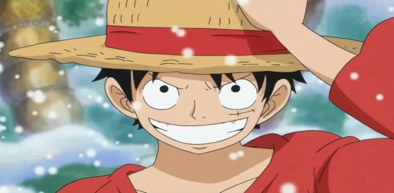
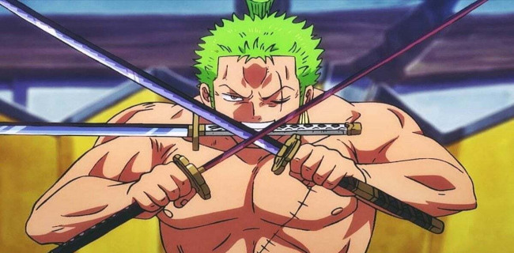
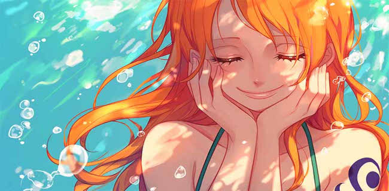
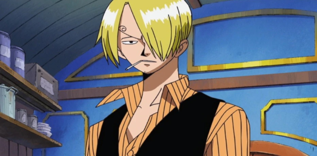
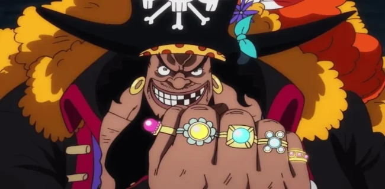

Monkey D. Luffy é o protagonista carismático e determinado de One Piece, obra-prima de Eiichiro Oda. Capitão dos Piratas do Chapéu de Palha, Luffy é reconhecido por seu chapéu de palha icônico, sua risada contagiante e, acima de tudo, por sua inabalável vontade de se tornar o Rei dos Piratas. Desde pequeno, ele sonha com liberdade total e aventuras pelos mares, e ao comer a Gomu Gomu no Mi (mais tarde revelada como a Hito Hito no Mi, Modelo: Nika), ganha habilidades de borracha, que usa de maneira criativa e muitas vezes imprevisível em combate. Mas o que realmente define Luffy não é seu poder, e sim sua capacidade de inspirar e unir pessoas através de sua honestidade, coragem e espírito indomável.

Ao longo da série, Luffy constrói laços profundos com sua tripulação, tratando cada membro como parte de sua família. Ele não luta por fama, riquezas ou reconhecimento, mas por liberdade e para proteger aqueles que ama. Sua bússola moral é clara: ele se opõe ferozmente à opressão, à injustiça e a qualquer sistema que tire a liberdade dos outros. Mesmo enfrentando inimigos incrivelmente mais fortes ou situações desesperadoras, Luffy nunca desiste, movido por uma fé inabalável em seus amigos e em seu sonho. Ele representa o ideal puro da aventura e da liberdade, sendo um dos protagonistas mais inspiradores e amados da história dos animes e mangás.
Roronoa Zoro
Roronoa Zoro é o espadachim dos Piratas do Chapéu de Palha e o braço direito de Monkey D. Luffy em One Piece. Desde sua introdução, Zoro se destaca por sua lealdade incondicional, força impressionante e o estilo de luta único conhecido como Santoryu — em que empunha três espadas ao mesmo tempo, incluindo uma na boca. Seu sonho é se tornar o maior espadachim do mundo, uma promessa feita em homenagem à sua amiga de infância, Kuina, e que ele carrega como um juramento inquebrável. Para Zoro, a força não é apenas um meio de proteção, mas um caminho de honra, orgulho e realização pessoal.

Zoro é conhecido por sua seriedade, senso de dever e um código de ética que muitas vezes o coloca como a voz da razão no bando, apesar de sua fama por se perder constantemente. Seu momento mais emblemático — o sacrifício silencioso em Thriller Bark, onde sofre toda a dor de Luffy para protegê-lo sem contar a ninguém — mostra sua imensa coragem e lealdade. Ele é um guerreiro que prefere a ação às palavras, e embora pareça frio, seus atos demonstram profundo respeito e carinho por seus companheiros. Zoro representa a disciplina, o sacrifício e a firmeza de propósito, sendo não só um espadachim lendário em formação, mas também um dos pilares emocionais da tripulação do Chapéu de Palha.
Nerona Nami
Nami é a navegadora dos Piratas do Chapéu de Palha em One Piece, conhecida por sua inteligência afiada, habilidades excepcionais de navegação e uma personalidade determinada e pragmática. Desde sua introdução, Nami se destaca como muito mais do que apenas a "cérebro" da tripulação — ela é uma sobrevivente marcada por um passado doloroso. Criada na vila de Cocoyashi, Nami foi forçada a trabalhar para o pirata Arlong para salvar sua vila, vivendo anos sob opressão enquanto secretamente lutava por liberdade. Sua história emociona e fortalece sua motivação: ela deseja mapear o mundo inteiro e, acima de tudo, proteger aqueles que ama.

Ao longo da jornada, Nami se torna uma peça essencial do bando de Luffy, não apenas por guiar os Chapéus de Palha pelos mares perigosos da Grand Line, mas também por sua coragem e lealdade inabaláveis. Embora frequentemente repreenda os membros da tripulação (principalmente Luffy e Zoro) por suas atitudes impulsivas, Nami demonstra profunda confiança neles, especialmente quando mais importa. Ela também domina o Clima-Tact, uma arma que manipula o clima, permitindo-lhe lutar com criatividade e estratégia. Nami representa a força da inteligência, da superação e da empatia, sendo um dos corações emocionais da tripulação e um símbolo de que coragem não se mede apenas por força física, mas por resiliência e amor.
Vinsmoke Sanji
Sanji é o cozinheiro dos Piratas do Chapéu de Palha em One Piece, conhecido tanto por suas habilidades culinárias excepcionais quanto por seu poderoso estilo de combate baseado em chutes, o Black Leg Style. Cavalheiro refinado e estrategista habilidoso, Sanji é um dos personagens mais completos e carismáticos da série. Criado no Baratie, um restaurante flutuante, e mais tarde revelado como um príncipe do reino Germa 66, Sanji carrega um passado conturbado de rejeição e abuso familiar, o que fortaleceu sua empatia e sua convicção em proteger os mais fracos, especialmente aqueles que passam fome — algo que ele mesmo enfrentou em sua infância.

Apesar de seu jeito mulherengo e impulsos cômicos quando está perto de mulheres, Sanji é um dos membros mais leais e confiáveis da tripulação de Luffy. Ele segue um código pessoal inquebrável: nunca levantar a mão contra uma mulher, independentemente da situação, e jamais deixar alguém morrer de fome. Sua culinária não é apenas alimento, mas também cuidado, apoio e respeito pelos outros. Em batalha, Sanji é feroz, rápido e implacável, sendo uma das maiores forças ofensivas dos Chapéus de Palha. Sua luta entre razão, dever e emoções — especialmente visível no arco de Whole Cake Island — o torna um personagem profundamente humano, dividido entre o orgulho e a necessidade de ser amado por quem ele é. Sanji representa o equilíbrio entre força e sensibilidade, dureza e compaixão.
Marshall D. Teach
Marshall D. Teach, mais conhecido como Barba Negra (Blackbeard), é um dos vilões mais ambiciosos, imprevisíveis e perigosos de One Piece. Ex-membro da tripulação dos Piratas do Barba Branca, Barba Negra começou sua jornada como um personagem aparentemente insignificante, mas revelou ser um estrategista brilhante e impiedoso. Ele traiu seu antigo bando para obter a Yami Yami no Mi, a fruta do tipo Logia que lhe concede o poder da escuridão, capaz de anular outras habilidades de Akuma no Mi — um poder absolutamente aterrorizante no universo da série. Posteriormente, ele se torna o único personagem conhecido até o momento que possui duas Akuma no Mi, ao adquirir também o poder da Gura Gura no Mi (anteriormente de Barba Branca), tornando-se uma ameaça de escala global.

Barba Negra é o oposto direto de Luffy em termos de filosofia e caráter. Enquanto Luffy acredita na amizade, na liberdade e na honestidade, Teach representa o oportunismo, a traição e a conquista pelo poder absoluto. Ele não possui o senso de honra que muitos piratas do mundo de One Piece valorizam, mas sim uma ambição desenfreada e a disposição de manipular, enganar e matar para alcançar seus objetivos. No entanto, o que o torna tão fascinante é sua complexidade — Barba Negra também sonha em se tornar o Rei dos Piratas, guiado por uma crença própria no destino e na “vontade do D.”. Ele representa o lado sombrio dos sonhos e da liberdade, mostrando que, no mesmo mar onde nascem heróis, também se forjam monstros.